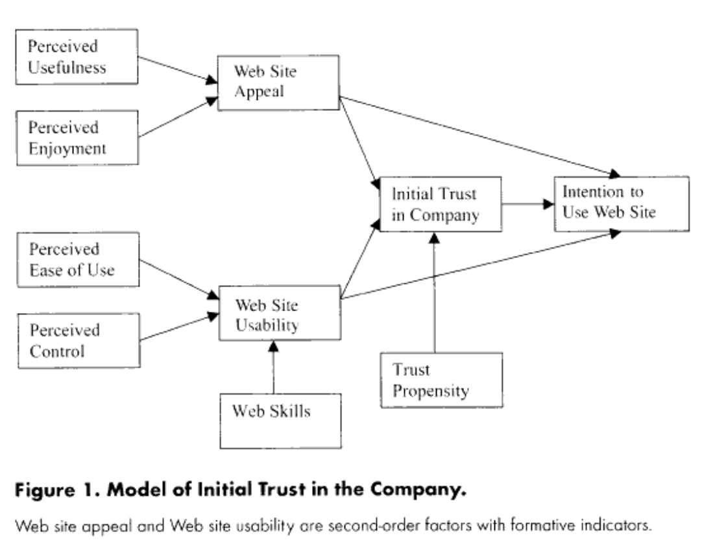

Social Perception
The internet helps perpetuate some of the ways in which we perceive social and emotional situations.
For example, One study found that children who used computers viewed deviant behaviors from other children such as goofing off in class to be more negative or deviant then offline1.
The trust of a page is also an important social perceptual component. People will perceive a website more positively if they have previously had a pleasant experience on that site. People are also more likely to trust a website if they have more perceived control or if the site appears to be easy to use.2
Diagram from the study which shows how people might make decisions on trusting a website.
Online, people are more likely to be avoid risks or deals/vendors that seem untrustworthy compared to offline sources. This is affected by how much someone trusts the internet and technology. Those who view as the Internet as useful will be less trustworthy of in person retailers. 3Culture may also play a role in how information is perceived on the Internet. One study compared Australian users with Chinese users:4

Australian people trusted sites more when they used portal affiliation, or that were affiliated with another reputable company. This is likely due to the more individualistic nature of Australia culture, where association with a reputable individual is considered valuable.
Chinese users trusted customer endorsements more. This is likely due to their culture being collectivist, so they depend upon group opinion.